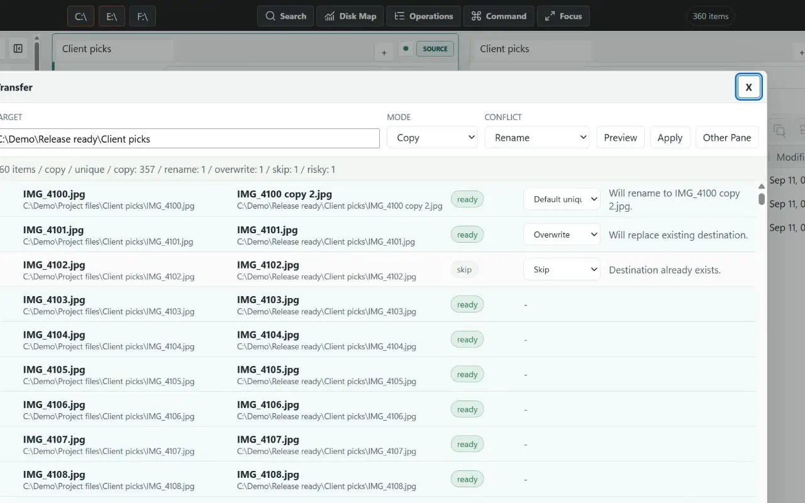
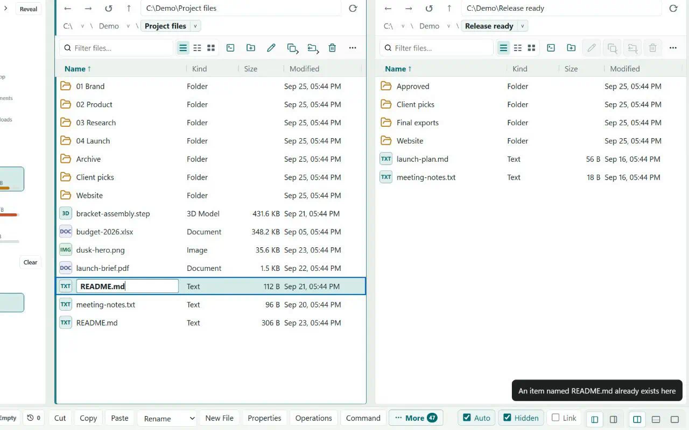

Bounded scope
The profile cannot escape the one authorized folder through traversal, junctions, device paths, or alternate data streams.
Let AI do the inventory and planning while Explore Better keeps every change visible, bounded, and recoverable.

Authorize only the Downloads folder, begin read-only, and ask for evidence before enabling write tools.
The plan is bound to current filesystem signatures, the destination is staged before commit, and interruption produces deterministic recovery choices.
The profile cannot escape the one authorized folder through traversal, junctions, device paths, or alternate data streams.
Existing destinations and policy choices appear in the plan instead of being buried in command flags.
Journalled operations can be monitored, canceled, reconciled after a crash, and undone when supported.

Refused, not guessed. A rename that would overwrite another file stops and says why, instead of replacing it.